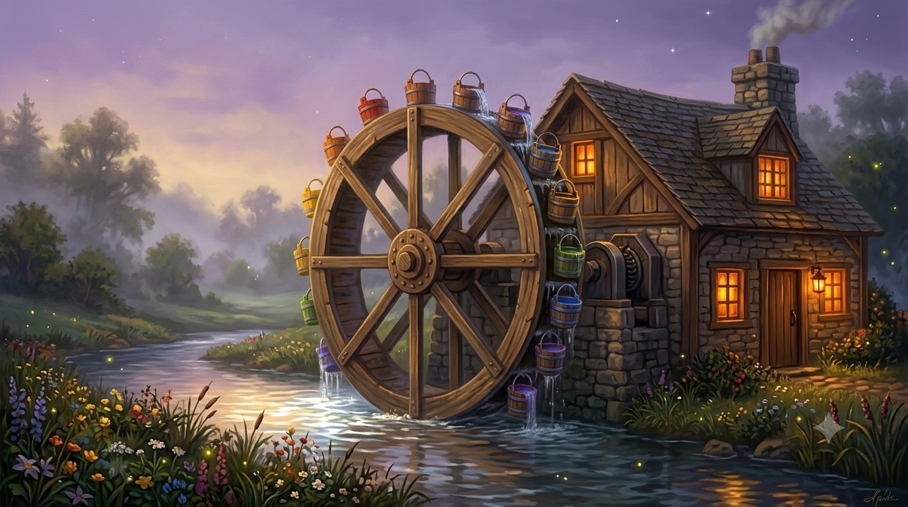

How customers and money flow into the village and compound — neither time nor operations, but the commercial engine that turns flow into value. The river drives the wheel; the wheel grinds the corn; the village is fed. Recognition becomes evidence; evidence becomes the authority that draws the next arrivals.

Recognition Riverthe signal that draws them in→ opens the Green · the Why The Black Egg · bucketthe scalable way in→ opens the Black Egg Root to Grow · bucketthe planting→ opens Root to Grow The Greenhouse · bucketthe tending, recurring→ opens the Greenhouse Voice · the hubthe instrument it turns on→ opens the Construct Evidence · the millthe by-product of every turn→ opens the Observatory Category · the smokethe authority that draws the next→ opens the Map Room · the decadeThe river is recognition; the three buckets are the paid ladder; the hub is Voice; the mill grinds out evidence; the smoke is the category's renown drifting back to the river. Hover a part to name it, click to enter.
Read it as a mill. The river is recognition, the current that turns everything. Three buckets scoop the paid ladder — the Black Egg, Root to Grow, the Greenhouse. The hub they all turn on is Voice. The turning grinds out evidence, and the mill's renown rises as smoke, the category, which drifts back to swell the river. The buckets are the revenue; evidence and the category are the compounding return. One turning wheel, three returns.
The other race in: TOM consultancy engagements diagnose the conditions around leaders — and deliver the very people whose development the village serves, joining the wheel at the gate. Consultancy revenue today, category evidence tomorrow, on one path.
Before the wheel turns there is an older, smaller moment. At the gate sits a welcome book. You write one true thing, where you have come from, something you are ready to acknowledge, and in return you are handed a pen, not as a tool but as a symbol. That is the way in stripped to its heart. The Black Egg is that same threshold built to scale: the first honest line a leader writes about how they actually land, and the instrument of voice handed back. Everything downstream begins with one true sentence. ⚑ Canon framing, drawn from Rachel's World of Enfys.
The Millwheel turns the wares into revenue; the Village Year is the rhythm by which they are delivered and improved; the Gather is the machinery that runs each turn. Three different questions about the same village: how value comes in, when the work beats, how the work is done. The strategic arc the wheel builds toward lives in the Map Room.